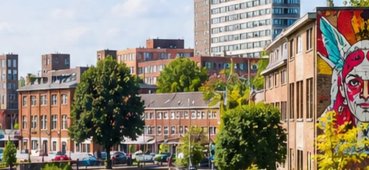

Jouw plek in
Enschede.
Hulp, buurtinformatie en activiteiten op één plek.
Bijvoorbeeld:

Dichtbij in EnschedeWat zoek je?
Actueel in Enschede
Het belangrijkste lokale nieuws. Kort uitgelegd en met bron.
Wat is er te doen?
Eenmalige uitjes én terugkerende activiteiten in de buurt.
Jouw buurt, jouw plek
Bij de Wijkwijzer kun je zonder afspraak terecht met vragen.
Hulp & handige websites
◌ONLINE ONDERSTEUNINGHulp & adviesUitleg per onderwerp, met bronnen van Online Hulp
◎WACHTLIJSTEN TWENTEJeugdhulp TwenteZoek aanbieders, expertise en wachttijden
◈SOCIALE KAARTWaar in TwenteVrij toegankelijke voorzieningen
Jeugdhulptwente.nl biedt een onafhankelijk overzicht van aanbieders en wachttijden. Beschikbaarheidswijzer
Organisaties in Enschede
VOOR PROFESSIONALS
Snel de juiste ingang
Kom je er niet uit?
De Wijkwijzer helpt je graag verder.